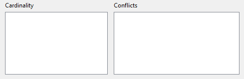
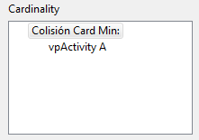
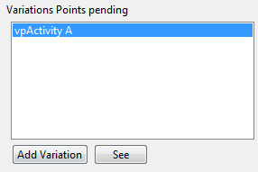
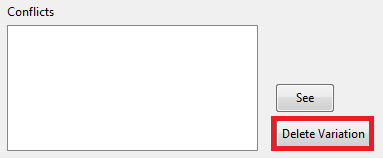
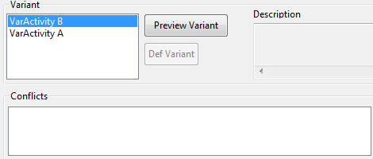

La gestión de control de dependencias se realiza de forma automatica a través de las dos estructuras de arbol que contiene la ventana de adaptación de procesos.

Se deben solucionar todos los posibles conflictos para poder adaptar un proceso, esto implica la solución de:
● Conflictos de cardinalidad:
Los conflictos de cardinalidad aparecen cuando existen Puntos de Variación que necesitan ser completadas por alguna Variante debido a que la cardinalidad del Punto de Variación es Obligatoria.
 
Para solucionar dichos conflictos hay que añadir una Variante compatible.
● Conflictos de dependencias:
Los conflictos de dependencias aparecen cuando se producen inconsistencias en las relaciones entre los elementos. vEPFC controla los conflictos que se generan de forma automatica, sin embargo deja al usuario que solucione los conflictos de forma manual. vEPFC ofrece una serie de opciones y funcionalidades para ayudar en esta tarea como la eliminación de los elementos que provocan un conflicto:

También controla los conflictos que pueden generarse entre las Variantes y que contiene los mismos mecanismos para la resolución de estas:

vEPFC controla las siguientes colisiones:
1. Cardinalidades
2. Dependencias entre puntos de variación (Inclusivas y Exclusivas)
3. Dependencias entre variantes (Inclusivas y Exclusivas)
Created with the Personal Edition of HelpNDoc: Free CHM Help documentation generator